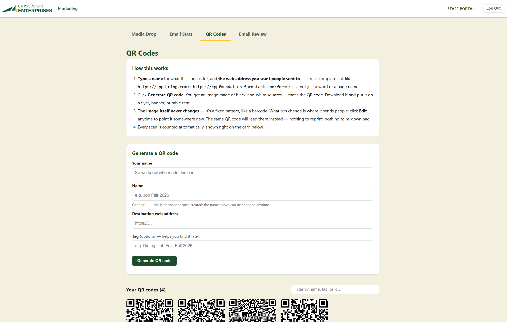

I build accessible websites and the tools behind them.
I'm a web professional with a Computer Science degree and 5+ years of web, accessibility, and digital marketing work, currently at Cal Poly Pomona Enterprises.
The first paid campaign I ran at CPPE, for the Pumpkin Festival, turned $1,250 in ad spend into $84,110 in attributed revenue.
Selected work
-
Planned and ran CPPE's first paid digital campaign across Search, Display, and Performance Max, and owned keyword, bid, and budget optimization from start to finish.
Result: a 67:1 return on ad spend, $0.31 per conversion, and 4,084 tickets sold.
-
Accessibility lead for CPPE's web properties: I audit and remediate websites and PDF documents to WCAG 2.1 and Section 508. I also manage design and administration for sites including Dining Services and Kellogg West, and lead a team of student assistants.
CPPE Dining Services, opens in a new tab Kellogg West, opens in a new tab
-
Raised merchandise sales 15% through SEO and store optimization, and led a hosting migration to AWS that improved site performance by 25%.
-
Managed the full build for client sites, including health clinics, TV studios, consulting firms, and breweries, from scope to delivery using WordPress and Webflow.
MyOfficeApps site, opens in a new tab Innovation Brew Works site, opens in a new tab
-
Built and customized a Shopify storefront during a COVID-era move to e-commerce, and ran product-page SEO that lifted the site's US ranking from 120,000 to 13,000 in five months.
Internal tools
I build internal tools with AI-assisted development, from the first requirement to a deployed tool people use.
Marketing web tool
Cal Poly Pomona Enterprises
2026
I directed Claude to design and build an internal tool for CPPE's marketing team, replacing a manual process for collecting finished creative. It runs on its own domain and is in active use.
- Staff upload finished assets to one shared place.
- It collects open and click statistics for eblasts.
- It generates QR codes for print and event materials.

Email campaigns
I design, build, and send HTML email for CPPE's dining, housing, retail, real estate, and event teams, reaching 30,000+ recipients per send with open and click tracking.
I built the web pages and eblasts for two team campaigns that earned MarCom awards: Platinum for Hot Dog Caper and Gold for Burger Envy.
Live previews
- Mother's Day Buffet and Brunch, opens in a new tab
- Waymaker, opens in a new tab
- Innovation Brew Works 10th Anniversary, opens in a new tab
- Pi Day, opens in a new tab
- Fairoaks Walk Listing, opens in a new tab
- Pumpkin Fest, opens in a new tab
- Student Housing, opens in a new tab
- Hydro Flask Sale, opens in a new tab
About
I like the whole path from build to result: standing up a site, running the campaign that fills it, and reading the analytics that say whether it worked.
Most of my work sits where technical and marketing overlap: WordPress and Shopify, GA4 and email analytics, paid search and SEO, and web accessibility that keeps organizations on the right side of the ADA and Section 508. Lately that includes building internal tools with AI-assisted development.
Web and platforms
- WordPress and Shopify
- HTML5, CSS, JavaScript
- SQL, AWS, SharePoint
- Figma and Webflow
- AI-assisted development
- WCAG 2.1 and Section 508
Marketing and data
- Google Ads (Search, Display, Performance Max)
- SEO and SEM
- GA4 and email analytics
- HubSpot
- E-commerce optimization
Certifications: HubSpot Digital Marketing (2025), WebAIM Accessibility (2025), Google Analytics (2023), FAA Part 107 Remote Pilot (2026).
Contact
I'm open to new roles and collaborations in web, accessibility, and digital marketing.
- Email: jamesL.2017@outlook.com
- LinkedIn: linkedin.com/in/jaele, opens in a new tab